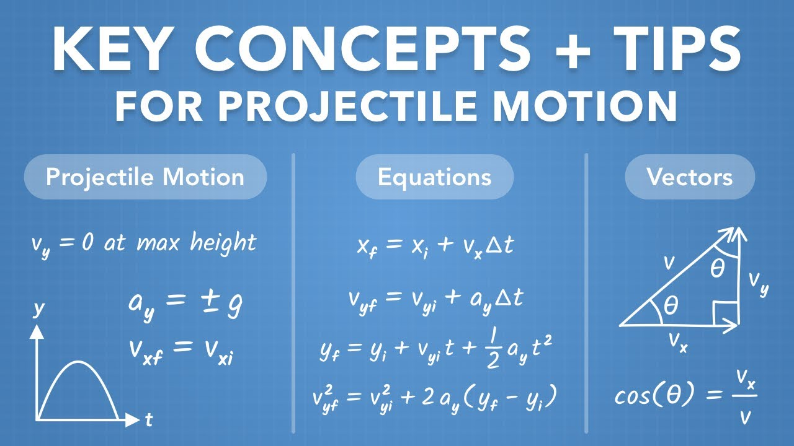

Projectile motion is the curved path an object follows when thrown or launched into the air, influenced by gravity.
Some examples that you might relate to in daily life include a typical basketball shot, or the trajectory of an arrow.
In our case, a ninja's shuriken flying toward its target is indeed a projectile motion.
Velocity is defined as displacement per unit time. A higher velocity means that the projectile will cover a larger distance in the same time interval.
We can study the velocity vector in two components: Horizontal velocity and vertical velocity.
The angle between the initial velocity vector and ground, affects the height and distance a projectile can achieve. For example, a 45° angle maximizes range under normal conditions.
Here, we can see that velocity multipled by cos(angle) will give us the horizontal velocity.
Whereas in order to find the vertical velocity, we need to multiply the velocity by sin(angle).
Gravity is the force by which a planet or other body draws objects toward its center.
In the game, you will see that gravity pulls the shuriken downward, creating the curved trajectory that we see in projectile motion.
When it is your turn, an info panel will be displayed on your side, at the top of the screen.
You will observe that there are sliders on these info panels, which you can adjust the velocity and angle of the shuriken.
With the help of these sliders, you can experiment how these factors influence the path of your throw!
After deciding the angle and velocity, all you have to do is click the throw button and watch the shuriken fly towards your enemy!
Here are some kinematics formulas for those of you who really want to be accurate with it.
